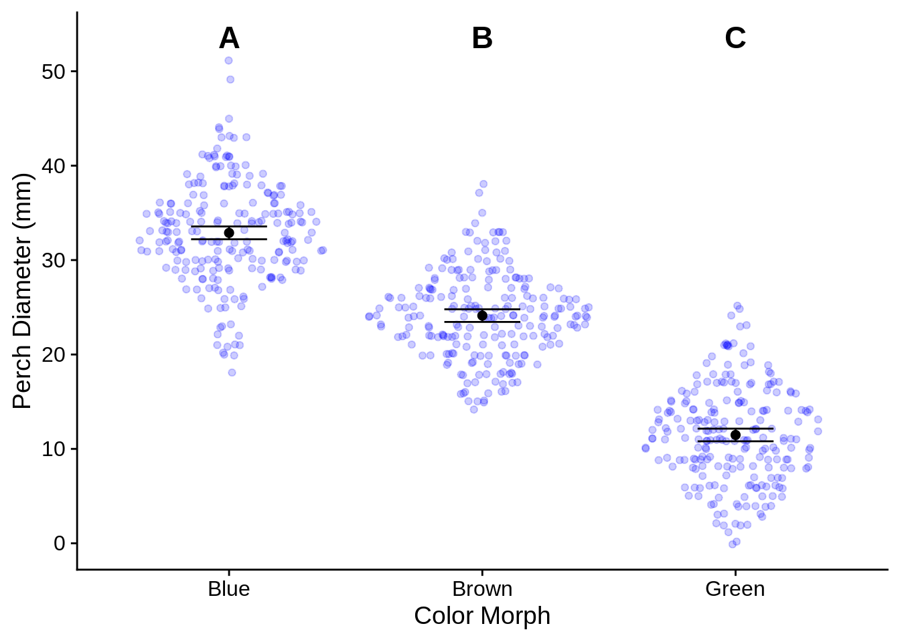

D Performing some useful analyses in R
I'm going to give some examples of how to do common analyses you'll need for this class. I won't be spending much time on the statistical assumptions or diagnostics.
library(tidyverse)
library(cowplot)
theme_set(theme_cowplot())
lizards <- read_csv("example_data/anoles.csv") # See Appendix A if you don't have this dataD.1 A note on factors
R has two ways of representing textual data: character vectors (also called strings) and factors.
- Character vectors are just text; they have no inherent underlying meaning.
- Factors are a data type with a specific number of levels; they're often used to represent different experimental treatments. Examples could include {low, medium, high} or {control, treatment}. Each level of a factor is associated with a number.
For the most part, it's easier and safer to work with character vectors. Most functions we'll be using know how to convert them when it's necessary.
One important thing to note is that ggplot arranges character vectors alphabetically on its categorical scales, but orders factors by their level number. Thus, to change the order of categorical x-axes (and other scales), you need to make your categories into a factor. This is done with the fct_inorder, fct_infreq, and related functions, which are part of the forcats package and loaded with tidyverse. The easiest one to use is fct_inorder, which changes the level values to be in the order of your data; when combined with arrange() and other dplyr functions, this is quite flexible and powerful. For more information on these and other factor functions, take a look at the forcats website.
If you want to manually create a factor, you can use the factor command, which is in base R (no package).
color_levels = c("Red","Green","Blue")
# Randomly select 20 colors from color_levels
color_example = sample(color_levels, size = 20, replace = TRUE)
color_example
## [1] "Blue" "Blue" "Blue" "Red" "Red" "Green" "Red" "Blue" "Green"
## [10] "Blue" "Blue" "Blue" "Blue" "Green" "Green" "Red" "Green" "Blue"
## [19] "Red" "Green"
# Convert it into a factor
color_as_factor = factor(color_example, levels = color_levels)
color_as_factor
## [1] Blue Blue Blue Red Red Green Red Blue Green Blue Blue Blue
## [13] Blue Green Green Red Green Blue Red Green
## Levels: Red Green BlueD.3 Linear Models: Regression and ANOVA
Linear regression and Analysis of Variance (ANOVA) are both special cases of the general linear model (LM), which fits a continuous response (y) to one or more predictors (x). You specify linear models in R with a formula syntax, which generally follows as: response ~ predictor. Combining this formula with the lm() function and a datset gives you the basis of a linear model.
D.3.1 Regression
Lets say we wanted to see how snout-vent length (SVL) affects mass:
simple_reg = lm(Mass ~ SVL, data = lizards)
simple_reg
##
## Call:
## lm(formula = Mass ~ SVL, data = lizards)
##
## Coefficients:
## (Intercept) SVL
## 1.62577 0.08886By default, this creates an LM object, which tells us the regression coefficients. For a linear regression (continuous response), these tell us the regression equation; in this case, that for every \(1 \text{ mm}\) increase in SVL, mass increases by \(0.089 \text{ g}\). Note that in this case, it may make sense to re-scale SVL to be in cm, so that the coefficient would be easier to interpret (e.g., use lizards %>% mutate(SVL_cm = SVL/10). To extract the coeficients directly, use:
coef(simple_reg)
## (Intercept) SVL
## 1.6257700 0.0888617For more information, use the summary function:
summary(simple_reg)
##
## Call:
## lm(formula = Mass ~ SVL, data = lizards)
##
## Residuals:
## Min 1Q Median 3Q Max
## -2.2672 -0.4699 -0.0530 0.3959 5.6050
##
## Coefficients:
## Estimate Std. Error t value Pr(>|t|)
## (Intercept) 1.625770 0.210781 7.713 4.59e-14 ***
## SVL 0.088862 0.003434 25.874 < 2e-16 ***
## ---
## Signif. codes: 0 '***' 0.001 '**' 0.01 '*' 0.05 '.' 0.1 ' ' 1
##
## Residual standard error: 0.7661 on 655 degrees of freedom
## Multiple R-squared: 0.5055, Adjusted R-squared: 0.5047
## F-statistic: 669.5 on 1 and 655 DF, p-value: < 2.2e-16The most important components of this are the \(R^2\) (which is listed as Multiple R-squared), the standard errors and p-values for each of your coefficients (Coefficients section), and the overall F-statistic and p-value (the last line).
A quick note on p-values:
- Don't base all of your interpretation on p-values; the \(R^2\) and adjusted \(R^2\) of a model are more important.
- The overall p-value relates to how the whole model explains the variance in the data; the coefficient p-value relates to whether the specific coefficient is different from zero.
- Coefficient-level p-values tend to be rather fragile, and shouldn't be used.
D.3.1.1 Plotting linear regressions
For a simple linear regression, ggplot can automatically plot the trendline (a.k.a., fitted values) and confidence intervals with geom_smooth().
lizards %>%
ggplot() +
aes(x = SVL, y = Mass) +
geom_point() +
geom_smooth(method = "lm", # use a linear regression
se = TRUE, # Include a confidence interval around the line
level = .95) # the level of the confidence interval; default = 95%For more complicated models, this approach may not work very well; it can be helpful to calculate the fitted values & confidence intervals from the model object and plot them directly.
You can get these values directly with the predict() function. The code below calculates the trendline and 95% confidence interval for the regression, and adds them to a data frame with the original data.
simple_reg_preds = simple_reg %>%
# Predict fitted values wish 95% confidence intervals
predict(interval = "confidence", level = .95) %>%
# The output of predict() is a matrix; that's hard to work with, so...
as_tibble() # we convert the output of predict() to a data frame (tibble)
simple_reg_plot_data = lizards %>%
select(SVL, Mass) %>% # we only need these columns
bind_cols(simple_reg_preds) # adds columns of simple_reg_preds to our lizards
View(simple_reg_plot_data)| SVL | Mass | fit | lwr | upr |
|---|---|---|---|---|
| 61.8 | 6.46 | 7.117423 | 7.058313 | 7.176533 |
| 57.1 | 5.82 | 6.699773 | 6.636126 | 6.763420 |
| 49.1 | 4.29 | 5.988879 | 5.890800 | 6.086959 |
| 51.2 | 5.29 | 6.175489 | 6.088343 | 6.262634 |
| 51.5 | 5.69 | 6.202147 | 6.116487 | 6.287808 |
| 45.3 | 5.84 | 5.651205 | 5.531606 | 5.770804 |
| 49.7 | 5.91 | 6.042196 | 5.947328 | 6.137065 |
| 48.0 | 5.09 | 5.891132 | 5.787013 | 5.995249 |
| 54.9 | 7.20 | 6.504277 | 6.433552 | 6.575002 |
| 52.7 | 6.66 | 6.308782 | 6.228823 | 6.388740 |
To plot this, you'd use a combination of geom_line() for the fitted values and geom_ribbon(), which would create the confidence interval region.
ggplot(simple_reg_plot_data) +
aes(x = SVL) +
geom_point(aes(y = Mass), color = "cornflowerblue") +
geom_ribbon(aes(ymin = lwr, ymax = upr),
fill = alpha("black", .2), # dark fill with 80% transparency (alpha)
color = grey(.4), # dark-ish grey border line
linetype = 2) + # dotted border line
geom_line(aes(y = fit))You can also use predict() to calculate the respected value of your response variable given new predictor(s); this is useful for interpolation and extrapolation.
# Create a data frame with new predictors
svl_predictors = tibble(SVL = c(20, 150, 600)) # New predictors
mass_predictions = predict(simple_reg,
newdata = svl_predictors) # The newdata argument is key here
# If unspecified, it uses the original data
svl_predictors %>%
mutate(Mass_estimate = mass_predictions)
## # A tibble: 3 x 2
## SVL Mass_estimate
## <dbl> <dbl>
## 1 20 3.40
## 2 150 15.0
## 3 600 54.9For more information, see the help page ?predict.lm.
D.3.2 ANOVA
Analysis of variance (ANOVA) is a special case of linear model where all of the predictors are all categorical. However, ANOVAs are usually treated differently from regressions for historical reasons. In R, you fit an ANOVA in the same way as a regression (with the lm() command); however, it's common to use the aov() command on the lm's output to reformat the results into a more traditional style. For the simple (one-way) ANOVA follows:
# Fit the model wtih a regression
simple_anova_lm = lm(Diameter ~ Color_morph, data = lizards)
# Reformat into traditional ANOVA style; this is usually done with a pipe as part of the previous step
simple_anova = aov(simple_anova_lm)
# Look at the ANOVA table
simple_anova %>% summary()
## Df Sum Sq Mean Sq F value Pr(>F)
## Color_morph 2 50586 25293 985.2 <2e-16 ***
## Residuals 654 16790 26
## ---
## Signif. codes: 0 '***' 0.001 '**' 0.01 '*' 0.05 '.' 0.1 ' ' 1The ANOVA table gives us estimates of variation explained by the predictor and the residuals. Note how different the output is from the summary of a regression, even though the underlying math is the same:
summary(simple_anova_lm)
##
## Call:
## lm(formula = Diameter ~ Color_morph, data = lizards)
##
## Residuals:
## Min 1Q Median 3Q Max
## -14.8837 -3.1176 -0.1176 3.1163 18.1163
##
## Coefficients:
## Estimate Std. Error t value Pr(>|t|)
## (Intercept) 32.8837 0.3456 95.16 <2e-16 ***
## Color_morphBrown -8.7661 0.4854 -18.06 <2e-16 ***
## Color_morphGreen -21.4086 0.4854 -44.11 <2e-16 ***
## ---
## Signif. codes: 0 '***' 0.001 '**' 0.01 '*' 0.05 '.' 0.1 ' ' 1
##
## Residual standard error: 5.067 on 654 degrees of freedom
## Multiple R-squared: 0.7508, Adjusted R-squared: 0.75
## F-statistic: 985.2 on 2 and 654 DF, p-value: < 2.2e-16Two quick notes about this:
- While \(R^2\) isn't included in the
aov()summary, it can be calculated as the total sum of squares of your predictors (in this case, Color_morph) divided by the total sum of squares including the residual; For this example, we have \(5.0586239\times 10^{4} / (5.0586239\times 10^{4} + 1.6790147\times 10^{4}) = 0.7508007\).
- The
aov()table provides a line for each predicting factor and the residuals; thelm()summary includes estimates for the intercept and the specific levels of the factors (e.g.,Color_morphBrown). These represent the dummy coded variables that R uses under the hood; you don't need to worry about this, but I've got an explanation for them below if you're interested.
Dummy coding: R converts an ANOVA into a (multiple) regression model by changing a categorical predictor with \(n\) levels into \(n-1\) predictor variables that can have values of 0 or 1. The first level of the factor doesn't get a dummy variable; its mean is represented by the regression's intercept. The other dummy coefficients represent the mean difference between the reference level and the level they represent. In our example, the reference category is Blue, so the regression's intercept is the mean Diameter for blue lizards. The average value for brown lizards would be the intercept plus the Color_morphBrown coefficient (and similarly for green). The aov() function reinterprets the dummy coded results as a traditionally categorical analysis.
D.3.2.1 ANOVA means & confidence intervals
# make a data frame with just your predictors (distinct removes duplicates)
color_levels = lizards %>% distinct(Color_morph)
color_levels
## # A tibble: 3 x 1
## Color_morph
## <chr>
## 1 Green
## 2 Brown
## 3 Blue
simple_anova_means =
# Calculate means & 95% CI
predict(simple_anova, newdata = color_levels,
interval = "confidence", level = 0.95) %>%
as_tibble() %>% # Convert to data frame
bind_cols(color_levels) # add the prediction data as more columns
simple_anova_means
## # A tibble: 3 x 4
## fit lwr upr Color_morph
## <dbl> <dbl> <dbl> <chr>
## 1 11.5 10.8 12.1 Green
## 2 24.1 23.4 24.8 Brown
## 3 32.9 32.2 33.6 BlueD.3.2.2 Post-hoc tests
In general, the ANOVA tests whether a factor (such as color morph) explains a significant amount of variation in the response. To test whether there are significant differences between specific levels of a factor, you need to run post-hoc tests on your ANOVA. A common post-hoc is Tukey's HSD (honest significant difference).
simple_anova %>% TukeyHSD()
## Tukey multiple comparisons of means
## 95% family-wise confidence level
##
## Fit: aov(formula = simple_anova_lm)
##
## $Color_morph
## diff lwr upr p adj
## Brown-Blue -8.766074 -9.906219 -7.625929 0
## Green-Blue -21.408608 -22.548753 -20.268463 0
## Green-Brown -12.642534 -13.774806 -11.510261 0You can use the witch argument to specify specific level comparisons, but by default it compares all of them.
A traditional way of summarizing post-hoc tests is to assign one or more letters to significantly different levels, where levels with different letters are significantly different from each other. For example, the letter grouping c("A", "AB", "B", "C") would indicate that group 1 and group 3 are different from each other, but not from group 2; group 4 is different from everything. In the above example, everything is different, so we could assign the letters A through C.
# We'll store these in a data frame for later use
anova_means_letters = simple_anova_means %>%
arrange(Color_morph) %>% # These will be plotted alphabetically, so we'll sort them that way to keep things easy
mutate(anova_labels = c("A", "B", "C"))
anova_means_letters## # A tibble: 3 x 5
## fit lwr upr Color_morph anova_labels
## <dbl> <dbl> <dbl> <chr> <chr>
## 1 32.9 32.2 33.6 Blue A
## 2 24.1 23.4 24.8 Brown B
## 3 11.5 10.8 12.1 Green CD.3.2.3 Plotting ANOVAs
The basics of plotting ANOVA results was covered in the last part of Section @ref(ggp_discx_conty), but we'll refine them a bit here. The main additions are the use of geom_text() to include the labels above each category and scale_y_continuous, which we use to customize the y axis a bit so that it doesn't cut off the labels. Be sure to indicate in your figure captions what the letters mean.
library(ggforce) # for geom_sina()
# We're going to add post-hoc letters to this plot
letter_y_position = max(lizards$Diameter) * 1.05 # Put letters at the top
anova_plot = ggplot(lizards) +
aes(x = Color_morph) + # Color_morph column is in both lizards AND anova_means_letters
# Show the raw data
geom_sina(aes(y = Diameter), # Diameter column is in lizards data frame
color = alpha("blue", .2)) + # semi-transparent points
geom_errorbar(
aes(ymin = lwr, ymax = upr), # columns lwr and upr are in anova_means_letters
data = anova_means_letters, # Use the summary data frame instead of lizards
color = "black",
width = .3 # How wide the error bars are
) +
geom_point(aes(y = fit), # fit column is in anova_means_letters
color = "black", size = 2,
data = anova_means_letters) +
geom_text(aes(label = anova_labels), # label is the aesthetic used to indicate text
y = letter_y_position, # This is a fixed spot, not an aesthetic
fontface = "bold",
size = 6, # font size
data = anova_means_letters) +
scale_y_continuous(
# insure the letters aren't cut off at the top
limits = c(NA, letter_y_position), # This is the same as ylim()
breaks = seq(from = 0, to = 50, by = 10), # set axis ticks every 10 points
name = c("Perch Diameter (mm)") # this is the same as ylab()
) +
xlab("Color Morph")
anova_plot
D.4 To do (In progress)
D.4.1 Comparing two means (t-tests)
If you have to do this and I haven't finished this section, just use an ANOVA; mathematically, it works out to more or less the same thing.